длинный японский меч. По форме клинка катана напоминает шашку, однако рукоять у неё прямая и длинная, что позволяет использовать двуручный хват. Навершие отсутствует. Небольшой изгиб клинка и острый конец позволяют наносить также и колющие удары.
японское холодное оружие, которое появилось в период Муромати. Кусаригама состоит из серпа кама, к которому с помощью цепи (кусари) крепится ударный груз (фундо). Длина рукояти серпа может достигать 60 см, а длина железка серпа — до 20 см. Техника работы этим оружием позволяла нанести противнику удар с помощью гирьки или запутать его с помощью цепи, после чего произвести атаку серпом. Кроме этого, можно было метать в противника сам серп, после чего возвращать его с помощью цепи. Кусаригама использовалась при обороне крепостей.
это восточное холодное оружие ударно-раздробляющего и удушающего действия, которое представляет собой две короткие палки, соединённые шнуром или цепью.
короткий традиционный японский меч. В основном использовался самураями и носился на поясе. Его носили в паре с катаной, также затыкая за пояс лезвием вверх.
древковое оружие и одна из нескольких разновидностей традиционно изготовленных японских клинков.
традиционный японский кинжал, часть «дайсё» - системы двух клинков, которые сопровождали каждого самурая.
ритуальный бег между холмами ас-Сафа и аль-Марва.
один из типов длинных японских мечей. Чтобы называться одати, меч должен был иметь длину клинка не менее 3-х сяку (90,9 см), однако точного определения длины одати нет. Обычно одати — это мечи с клинками в длину в основном 130–180 см и рукоятью более 50 см.
традиционное холодное оружие ударно-раздробляющего действия жителей острова Окинава. Его прототипом послужила рукоять для небольшой рисовой мельницы.
японский нож, возможно произошедший от кельмы.
пара мечей самурая, состоящая из дайто (длинного меча) и сёто (короткого меча). Длина дайто — более 60,6 см, длина сёто — 30,3-60,6 см. Также в качестве сёто мог использоваться кинжал-танто, длина клинка которого не превышала 30,3 см [источник не указан 2570 дней]. Так часто поступали, если в роли длинного меча выступал тати [источник не указан 2570 дней].
Это короткий меч, выкованный с гораздо меньшим усердием, чем катана или тати. Современные ниндзято часто имеют прямой клинок и квадратную цубу (гарду), но оригинальные ниндзято были изогнутыми. Некоторые источники утверждают, что ниндзято, в отличие от катаны или вакидзаси, использовался для нанесения как режущих, так и колющих ударов. Однако основной функцией катаны также был мощный режущий удар.
Значение связано с размером меча 130–180 см и рукоятью более 50 см. Нодати использовался как оружие пехоты в бою. Использование его в помещениях или других ограниченных пространствах представляет определённые трудности. Основной причиной того, что использование таких мечей не было повсеместным, являлась сложность изготовления. Из-за своей большой длины и веса нодати был очень сложным оружием. Одним из назначений нодати была борьба со всадниками.
длинный посох из дерева или бамбука, иногда из металла либо обшитый металлом.
японский тип древкового оружия, представляющий собой копьё и имеющий множество модификаций. Термин появился в период Камакура.
деревянный макет японского меча, используемый в различных японских боевых искусствах, в том числе айкидо, для тренировок.
веер, созданный специально для использования в рукопашном бою. Некоторые виды таких вееров использовались в феодальной Японии, Китае и Корее.
тип японского меча, использовавшегося самураями в феодальной Японии. Термин появился раньше и обозначал более лёгкие и короткие, по сравнению с тати, клинки. Первое время утигатана была оружием для небогатых людей, и лишь в эпоху Эдо она заняла место основного меча Японии. С этой эпохи она начала называться «катаной». Утигатана носилась лезвием вверх на поясе и была, как правило, немного меньше тати.
тип традиционного японского меча (нихонто), похожего на саблю, который носили самураи феодальной Японии. Тачи и утигатана обычно различаются по длине, степени искривления и способу ношения в ножнах, последнее зависит от расположения мей (銘), или подписи, на танге.
оружие самураев феодальной Японии, разновидность тэцубо в виде металлической палицы с круглой рукоятью, имеющей утолщение с кольцом на конце, и, зачастую, дополненной небольшими незаточенными шипами. Схожим оружием такого же типа являются нёибо, консайбо и арарэбо.
это река, крупнейший левый приток Волги. Длина Камы составляет 1805 км, из них 910 км протекает по Пермскому краю.
это тип японского меча традиционного изготовления с удлинённой рукоятью, использовавшийся классом самураев феодальной Японии. Нагамаки представлял собой длинный меч с клинком длиной 60 см и более и рукоятью, примерно равной длине лезвия. Лезвие было односторонним, напоминая клинок нагинаты, но рукоять (цука) нагамаки была сделана скорее как рукоять катаны. Название «нагамаки» («длинная обертка») дано по традиции обертывания ручек. Рукоять нагамаки была обмотана кожаными или шёлковыми шнурами крест-накрест. Нагамаки предназначен для больших размашистых и рубящих ударов. Традиционно он использовался как оружие пехоты, часто применяемое против кавалерии.
японское слово, означающее прямой обоюдоострый меч (иногда с массивным навершием). По форме похож на цуруги-но-тати (прямой односторонний меч). Считается, что произошёл от китайского цзяня, но видоизменён японцами. Использовался как боевой в VII–IX веках, до появления сабель тати, впоследствии — в церемониальных и религиозных целях.
рандомные мемы про котов
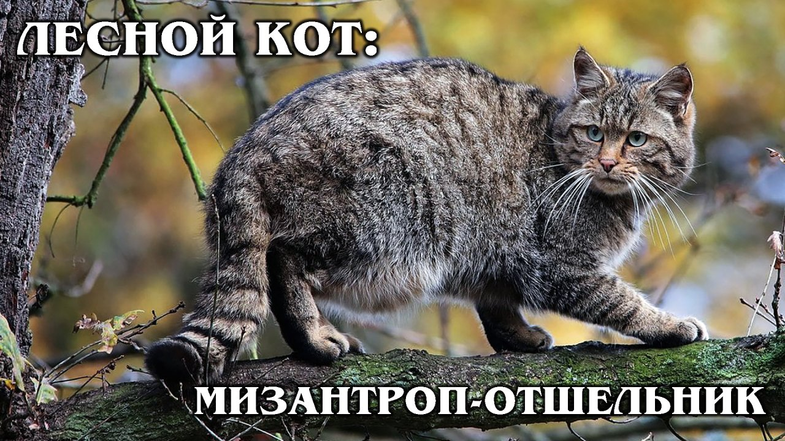 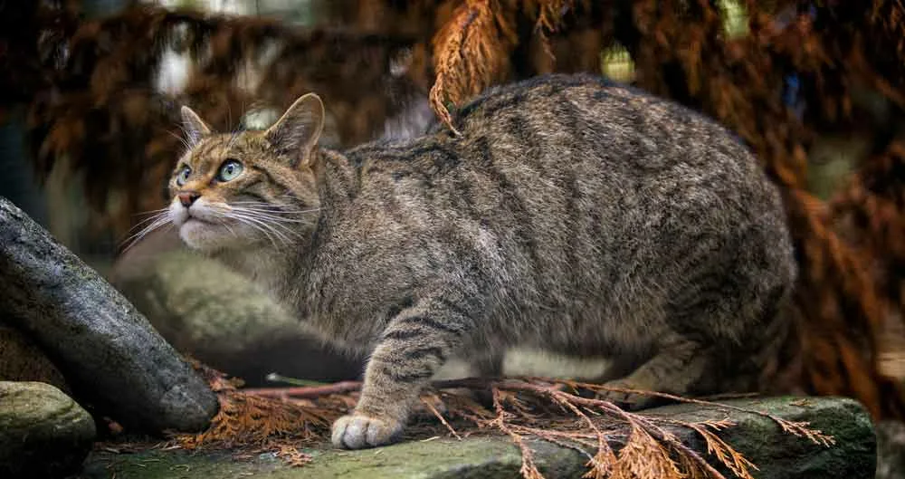 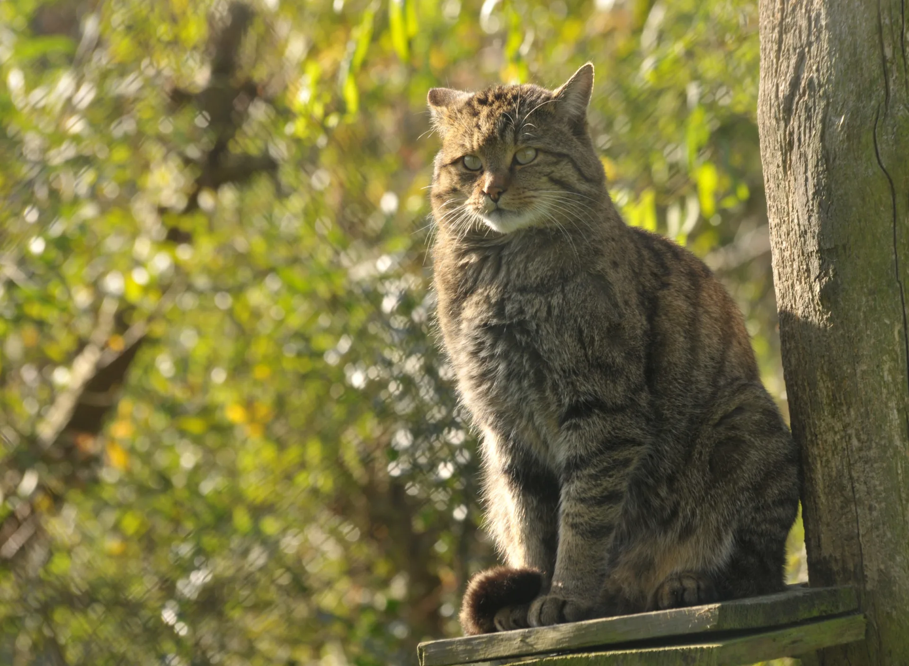 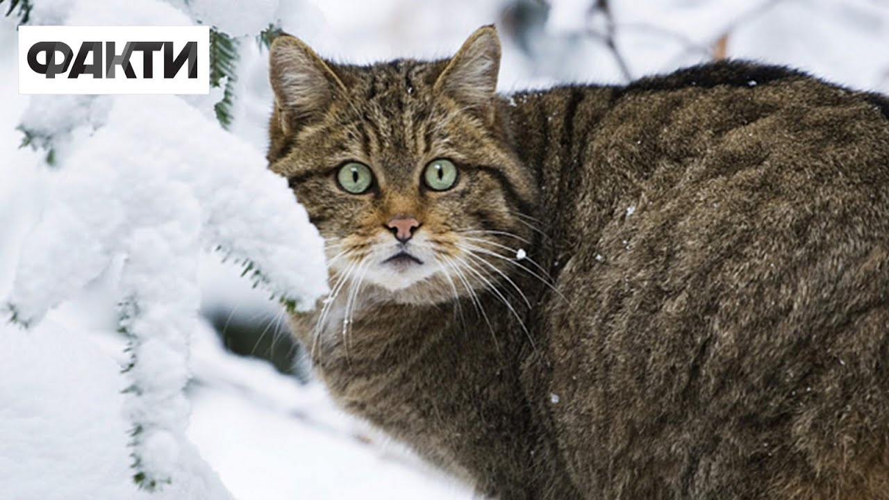 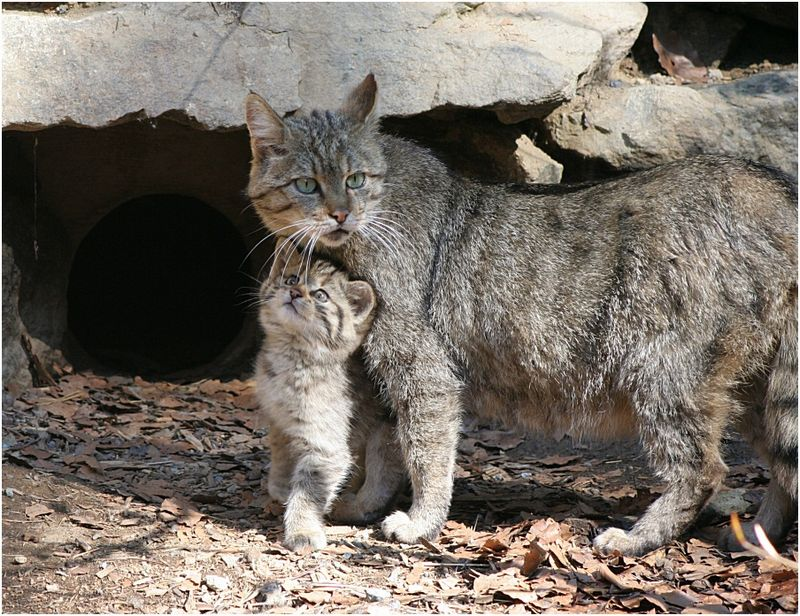 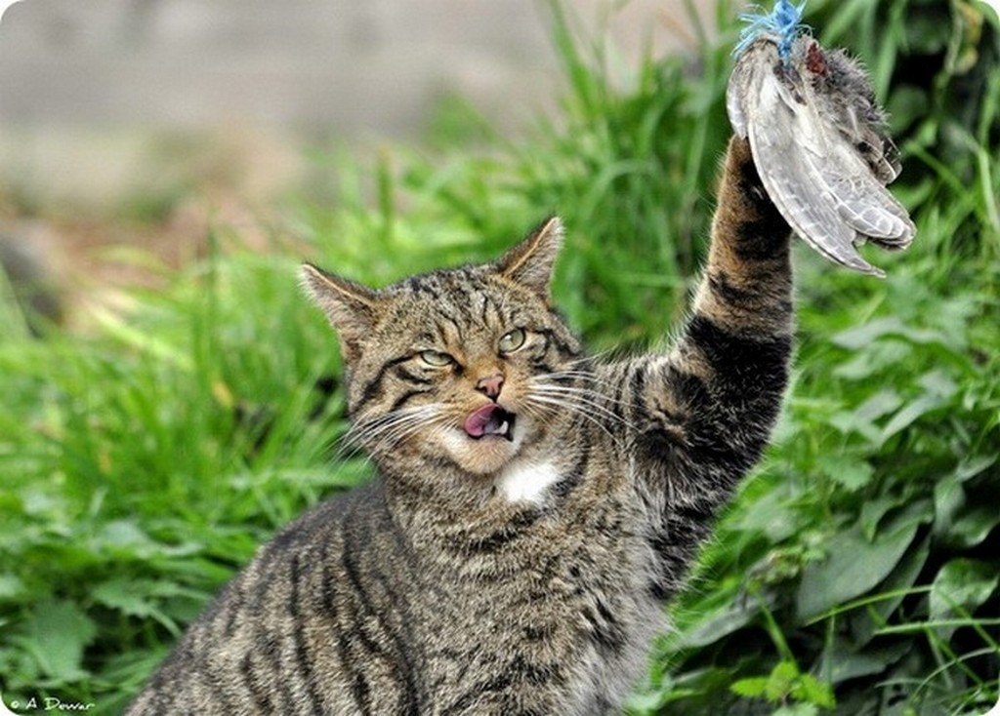 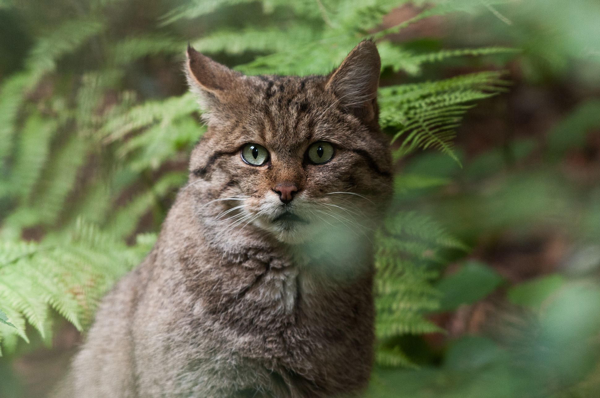 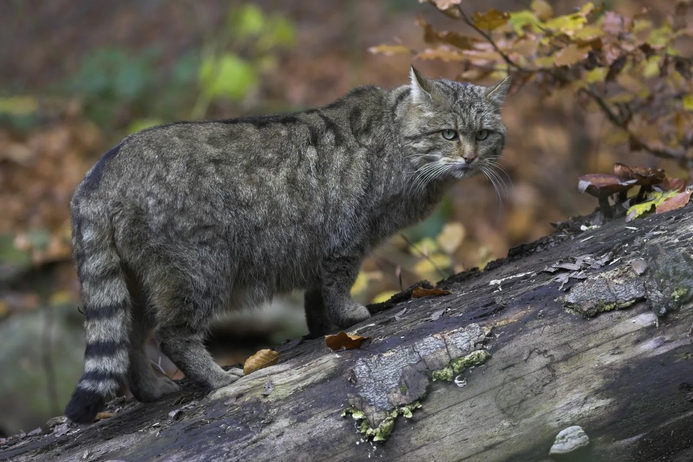 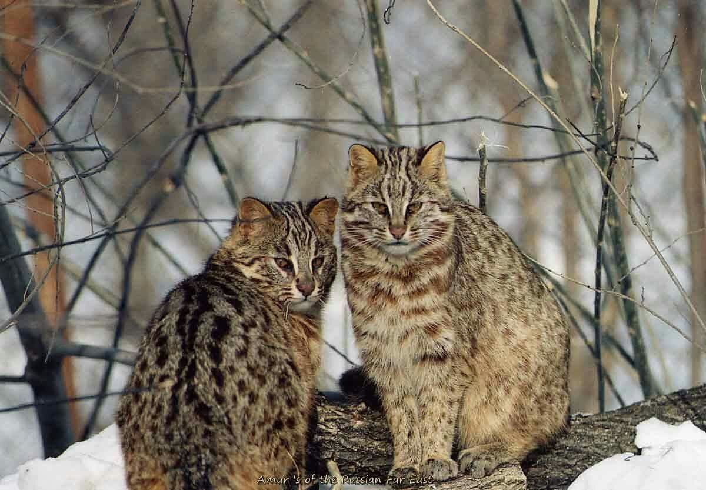 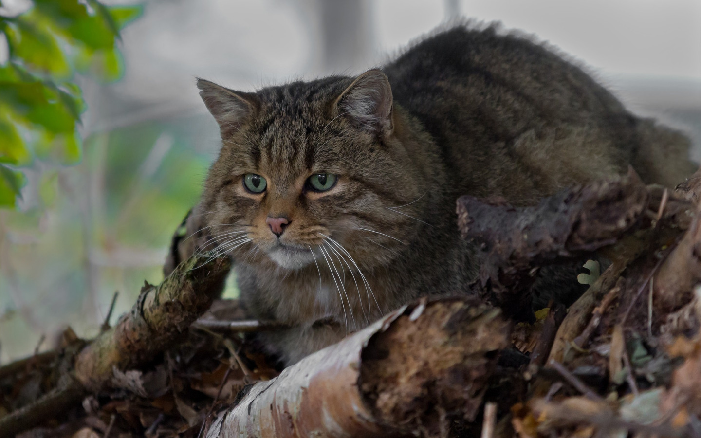 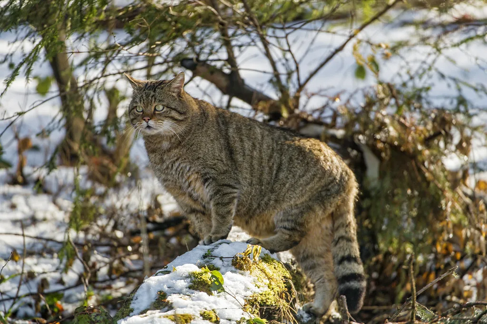 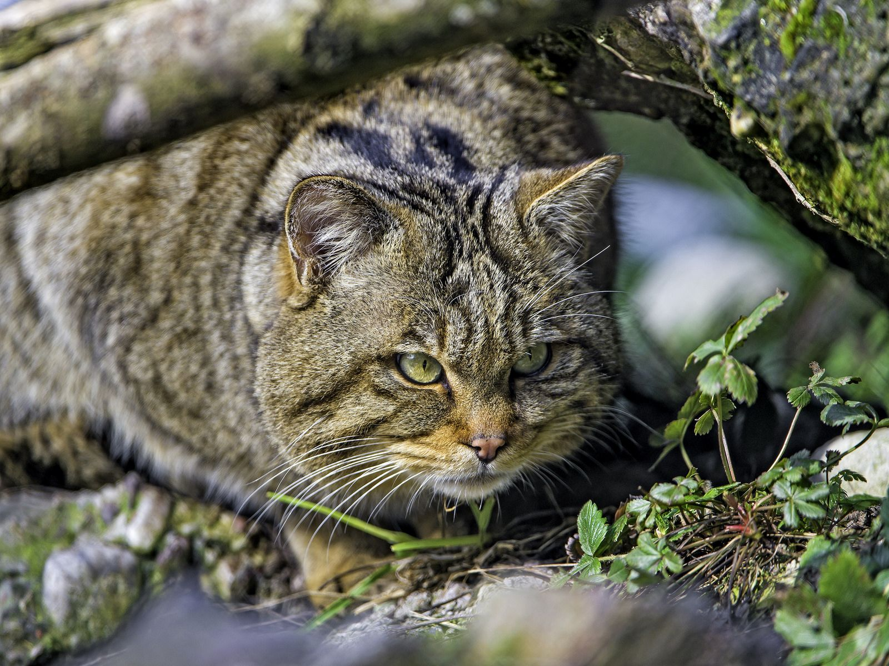